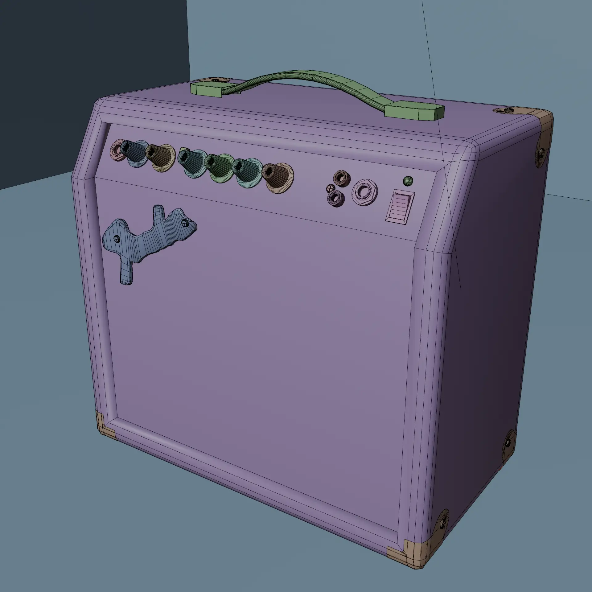
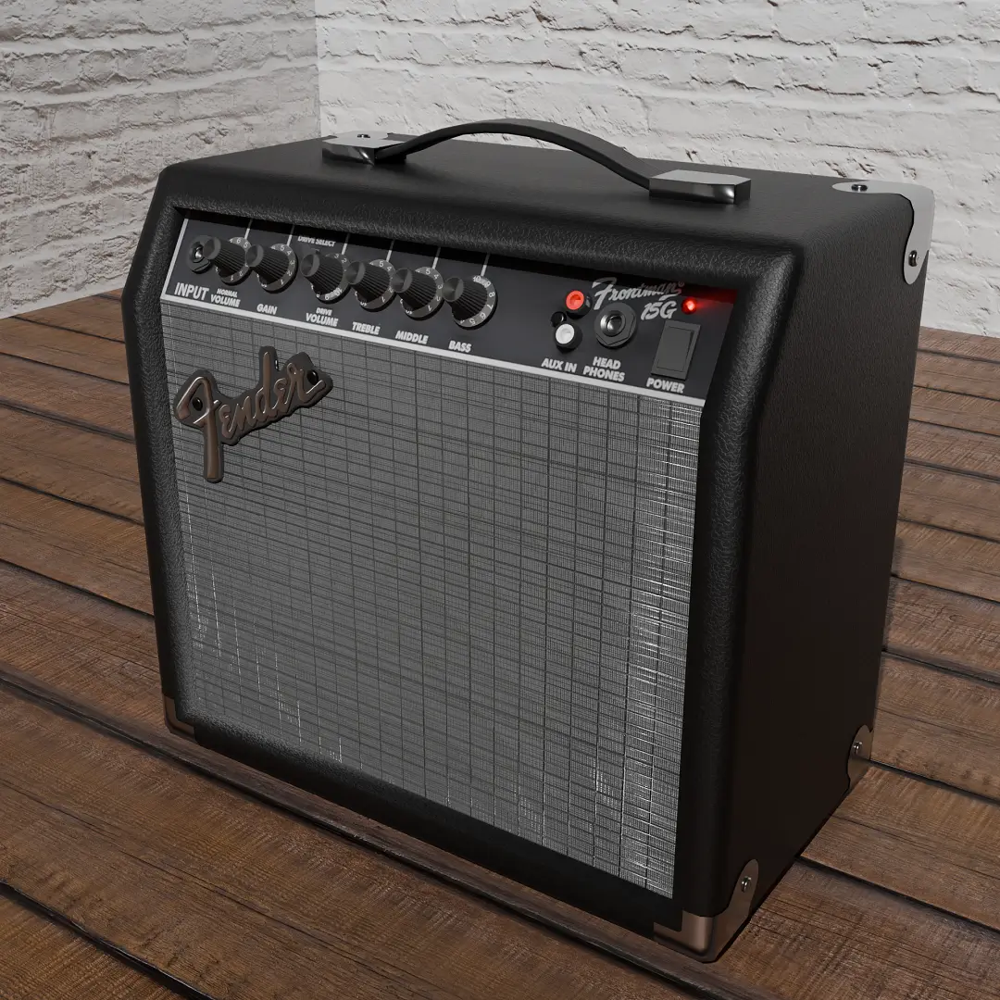
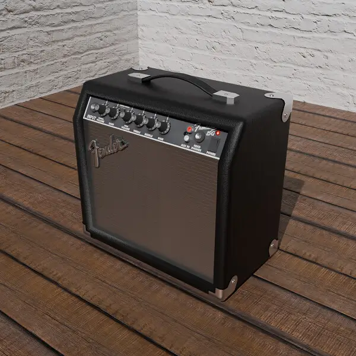
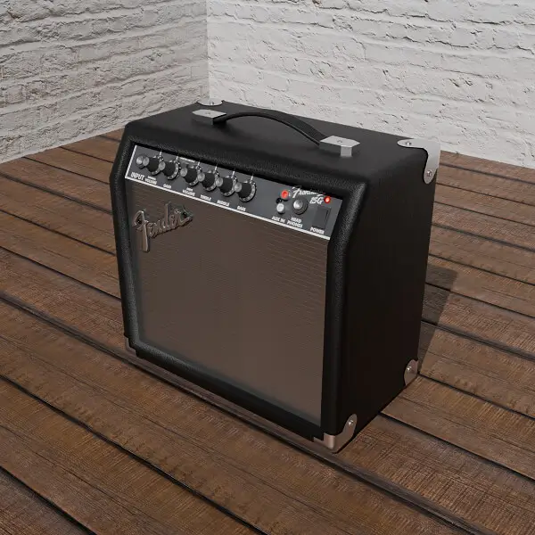

Use the slider to compare the viewport and rendered image!
Fender Amp | Project Type: Model | Type: Prop
Info
This model is based on the Fender Frontman 15g Amp which I own and was started in July 2024>>> V1.0 I created the main shape of the amp along with volume dials
>>> V1.1 I added details such as input Jacks and metal corners
>>> V1.2 I added the amp handle and an On light
>>> V1.3 Optimised the model from 257k tris to 19k using baked normal textures for the mesh fabric and the Fender logo
What I learned
>>> How to properly bake details from a high poly mesh to a low poly mesh while still maintaining quality utilising normal mapsAdditionally I followed a consistent naming scheme for textures and materials which I had not done before
Specs:
>>> Software: Blender>>> Final Render: Cycles
>>> Tris: 19k
Potential improvements:
>>> Details such as scratches and dustProcess images
V1.0 V1.1
V1.2
V1.1
V1.2